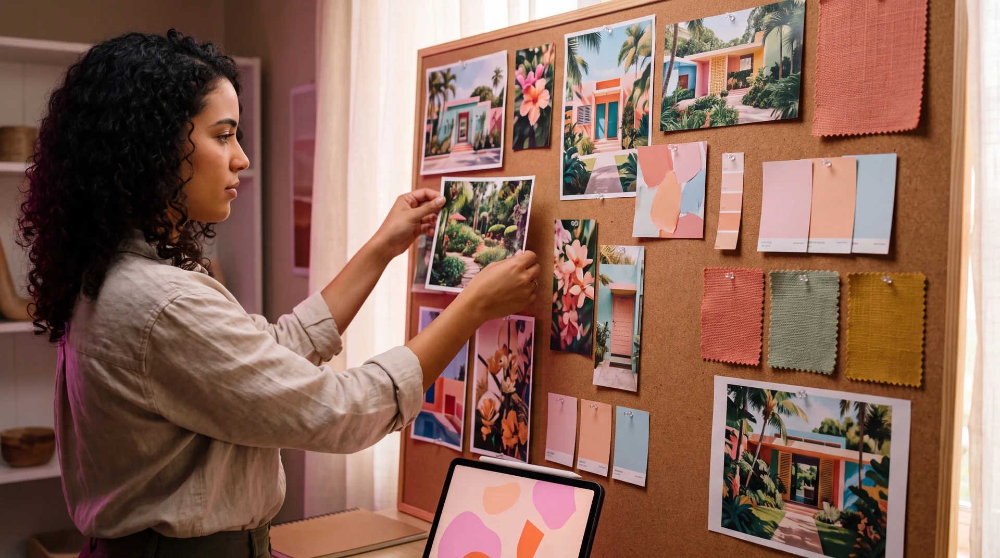
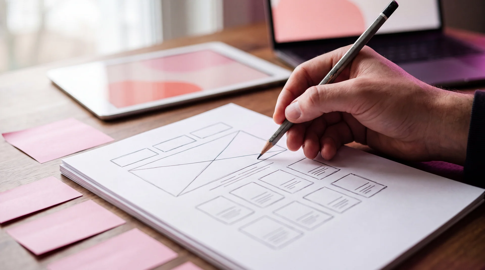
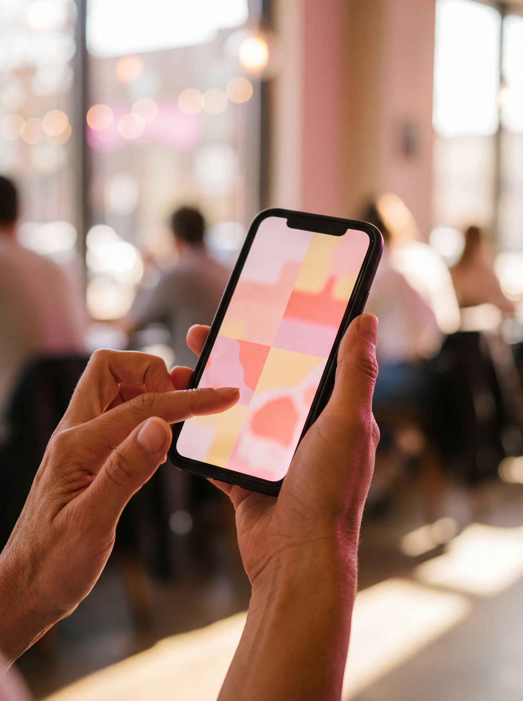
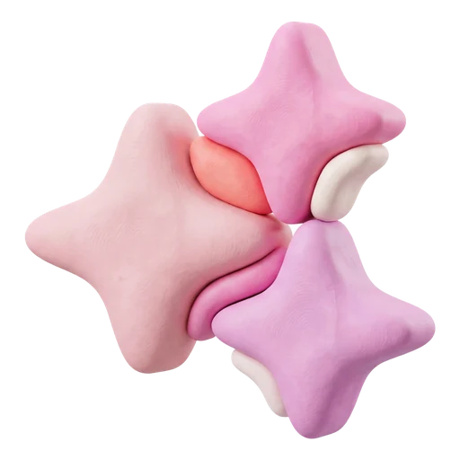
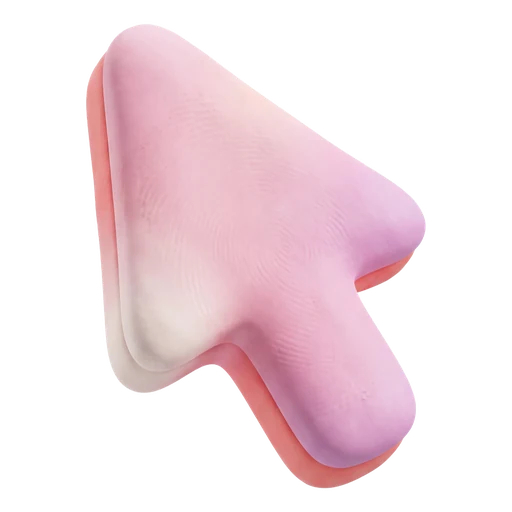
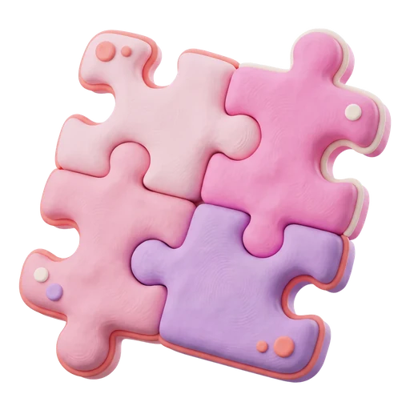
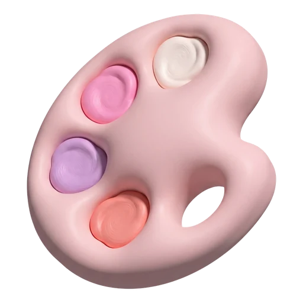
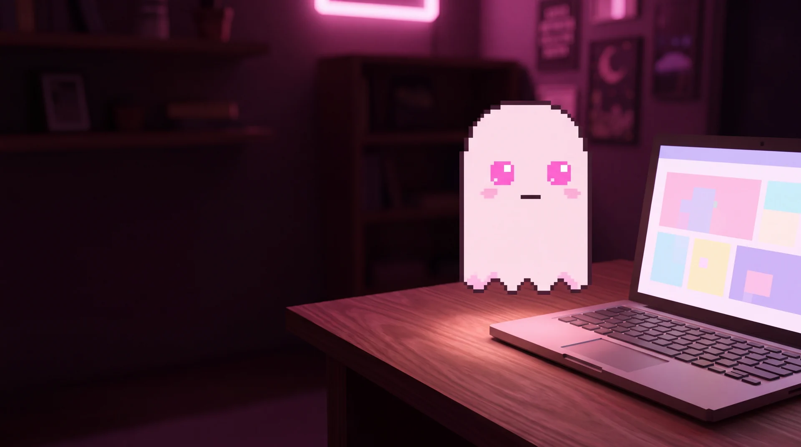
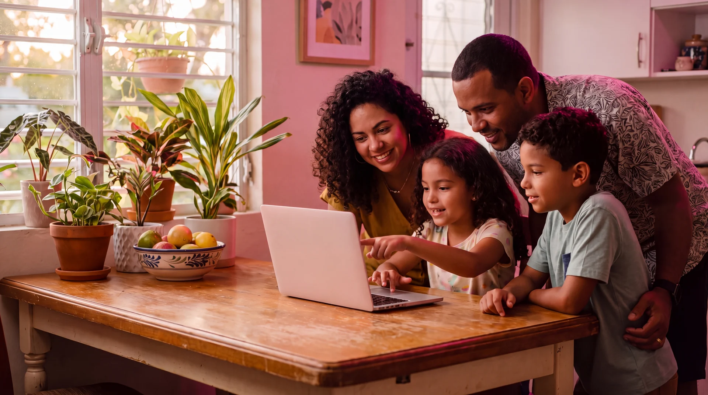
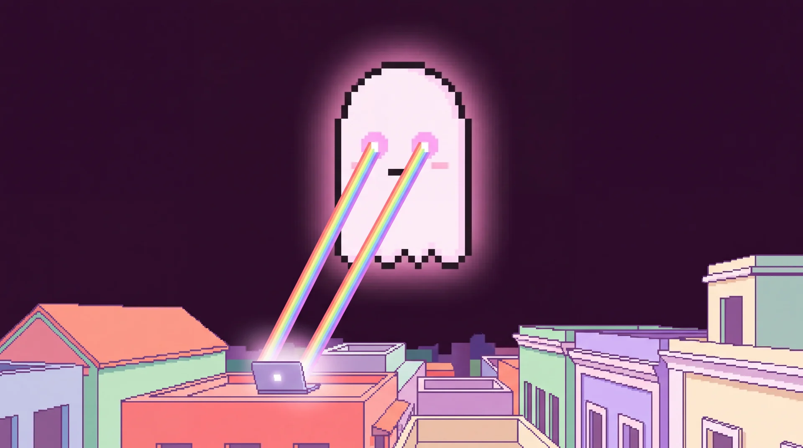

Build a website tonight with AI
Eleven simple steps, mostly free tools, and one very helpful ghost. Nothing to install until the last steps.
Grab a phone or laptop. You start in ten minutes.
to live website
A real website
with your name
on it
Pick a project you care about: a family bakery, a lemonade stand, a club page. Tonight it gets a home on the internet.
One page. Built by you, guided by AI.
Write down one small website idea. Right now.
your own .com
Collect. Prompt. Build. Ship.
Eleven steps grouped into four easy moves. Each one takes minutes, not days.
Make a folder called ‘My Website’.
Pictures, colors, sections
Fill the spec, enhance it
Generate, pick, polish
Publish free, add a .com
Find inspiration images
Start on Pinterest. Search for the kind of site you want and save the looks you love to one board.
Make a board and save your first 3 pins.




Find inspiration animations
OriginKit is a free library of animated website pieces. Find one or two effects you love and copy their links.
Save one link. Write its section: ‘Hero’.
e.g. Hero → soft fade-up

Pick a color palette
ColorHunt has thousands of ready-made palettes of four colors that already look good together. Pick one and copy the codes.
Copy one palette’s four codes.
Each code is a color’s phone number.
Plan your sections, top to bottom
List your website’s sections in order. Always start with the Navbar at the top, then the Hero. After that, it is up to you.
List Navbar, Hero, plus five more.

Mash it into one design spec
Take what you like from every inspiration piece and describe it in one prompt. Colors from ColorHunt, layout from your list, moves from OriginKit, mood from Pinterest.
Next: write what your site is for, in one line.
- Purpose, in your own words
- Section order from Step 4
- Color codes and a mood
- OriginKit link per animation

Fill in the blanks
Copy this template. Replace every highlighted blank with your own words and links.
- 1What it’s for, and who it’s for
- 2Your section list from Step 4
- 3Your 4 color codes + a mood
- 4A section name, like Hero
- 5Your OriginKit link
Copy it. Fill all five blanks. Save it.
Build a single-page, static website for… {WHAT IT’S FOR} The section and layout are… {YOUR SECTION LIST} Use these colors and mood… {4 COLOR CODES + A MOOD} Extract and implement this element in the {SECTION} section {ORIGINKIT LINK}
Two animations? Repeat the last line once for each.
Let Bolt.new enhance your prompt
Bolt.new has a button that rewrites your rough notes into a detailed spec a designer would be proud of.
Sign in, paste, tap Enhance. Compare.
Let two AIs race on arena.ai
Paste your enhanced prompt into arena.ai and let two models build your site side by side. You pick the winner.
Run it with the two models on the right.
A = Gemini‑3.8‑flash
B = Claude‑sonnet‑5‑high
Try it on Google Stitch too
Paste the same enhanced prompt into Google Stitch. It designs screens you can preview and export as code. Now you have more options to choose from.
Generate two designs on Stitch.
Pick your favorite. Download it.
Two drafts from arena, two from Stitch. Pick the one that feels most like you, then download its code.
Save your favorite in ‘My Website’.
1 favorite out.
Look for Download, Export or Code on the draft you pick.
Open the code in your Claude app
A patient helper that edits your file with you, one section at a time.
Pro or up, about $20 a month, on a grown‑up’s account.
Ask a grown-up to set up the Claude plan.
- 1Download the Claude app for Mac or Windows
- 2Click the Code tab at the top
- 3Choose the folder My Website
Stuck? Ask Claude: “Help me open this folder.”

Say this to Claude, word for word
This first message sets up everything: it tells Claude you are new, what the file is, and how to guide you.
- 1Tells Claude you are new
- 2Says what the file is
- 3Asks it to guide you
Copy it. Paste it into Claude. Enter.
This is my first time creating a website. Help me polish and finish the website design. I downloaded this from an online tool and would like to work on it locally until we have a final version. Familiarize yourself with the file, open it for me locally so I can see the changes, and let's work section by section from top to bottom, including the elements and anchor links. This is a single page website, static. Guide me through all this process.
Publish free on GitHub Pages
GitHub Pages hosts static websites at no cost. Your site gets a free address like yourname.github.io.
A grown-up creates a free GitHub account tonight.
Stuck? Ask Claude: “Help me publish this on GitHub Pages.”
Get your own .com
Buy a website name for about $5 to $12 a year, then connect it to GitHub Pages for free.
Search your dream name before it’s gone.
a short name. Check the renewal price.
Copy four numbers from GitHub’s guide into your domain’s settings. Claude can walk you through it.
Turn on the padlock (“Enforce HTTPS”).
Sofi’s Lemonade Stand
A 10-year-old wants a website for her weekend stand. Here is how the Collect and Prompt steps look in real life.
Compare Sofi’s spec with yours.
Build a single-page, static website for 1Sofi's Lemonade Stand…
The section and layout are… 2Navbar, Hero, Flavors, Hours, Kind Words, Contact, Footer
Use these colors and mood… 3lemon, mint, pink, navy · sunny, playful
Extract and implement this element in the 4Hero section 5originkit.dev · soft fade-up
Sofi + a grown‑up,
30 minutes each
From four drafts to a live site
Teach it to your family
This workflow is a great first project for kids and grown-ups together. It builds taste, writing, and problem-solving.
Topic, pins, colors, moves
Sign-ups, purchases, and the Claude plan
Read the AI answers out loud
Pick a date for a 30‑minute ‘Collect’ session.

No home address, school, or phone numbers.
Grown-ups: one evening.
With kids: 3‑4 short sessions.
One evening.
Now go build something
Start tonight with Step 1. Share your site with me when it’s live, I’d love to see it.
Questions? Find me after.
